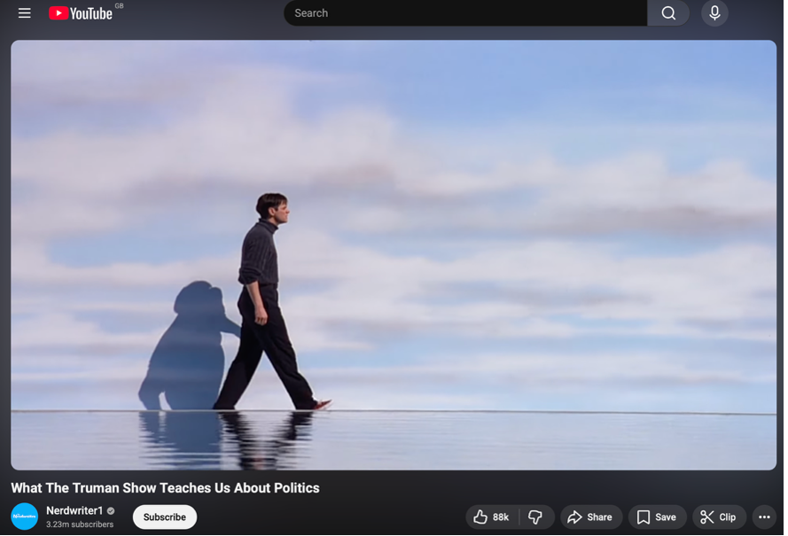
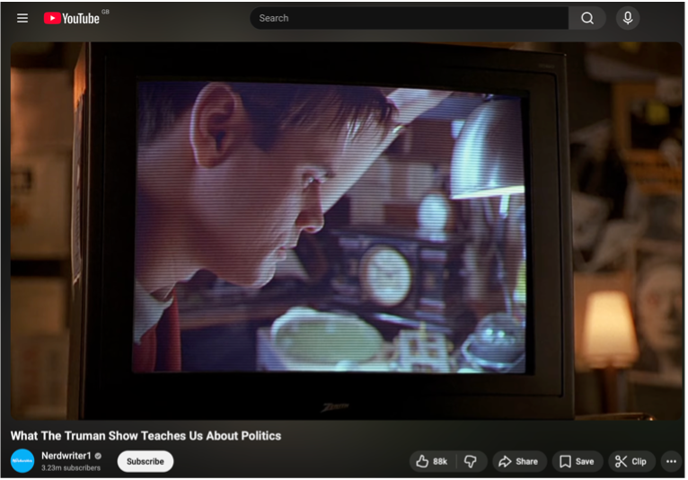
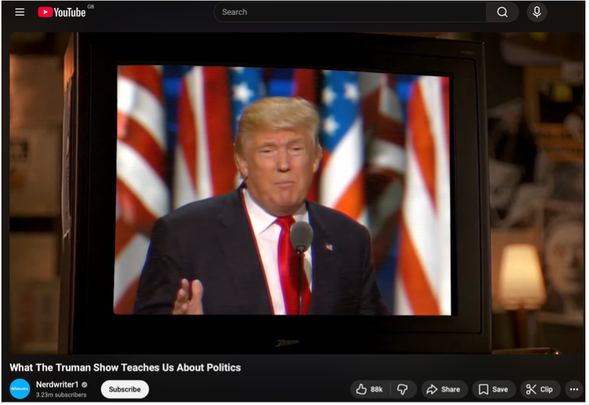

Visual Research & Technology
I assessed the evolution of technology in the digital industries through the research of Fax (facsimile) machines. Interestingly, Fax machines were first patented in 1843 by Alexander Bain, although they were highly experimental at the time and had no implementation into corporate industries. Bain had created a device that could 'telecopy' messages through an analogue transmission, sound.
It wasn't until 120 years later in the 1960s that we began to see Fax technology implemented into the digital industries. At this point, and until the creation of email and digital documents such as PDF, Fax dominated telecommunications in office spaces as it was a simple way for contracts and documents to be shared across telephone line networks.
As for visual essay research, I conducted a case study on What The Truman Show Teaches Us About Politics a video essay posted on Youtube by Nerdwriter1 (2016).
It explores how The Truman Show film reflects modern media and political realities. The essay’s most influential feature for my work is its use of carefully edited video clips, which are patched together to build meaning rather than relying solely on spoken explanation.
Clips from the film are combined with external visuals and subtle background music to create a layered narrative, while the narration guides the viewer through the argument. This combination allows the visuals to do much of the storytelling, with the voiceover acting as a unifying thread rather than the sole focus.
I found this approach particularly inspiring because it demonstrates how ideas can be communicated through the interaction between image and sound. Instead of depending entirely on dialogue or text, the essay uses visual evidence to reinforce its points, making the analysis more engaging and accessible.
This has influenced my own approach, encouraging me to experiment with editing together multiple clips and placing narration over the top.



References
Nerdwriter1 (2016) What The Truman Show Teaches Us About Politics. YouTube. Available at: https://www.youtube.com/watch?v=cLJAXu5OD-c (Accessed: 2 Feb 2026).
Fax machine imagery available at: https://www.pexels.com/photo/a-white-obsolete-telephone-on-a-vintage-typewriter-11804940/